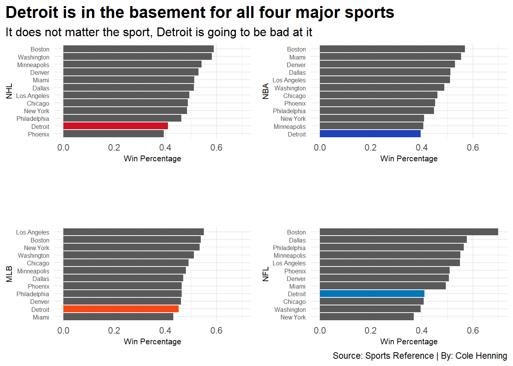

Misery loves company. Sports fans love to compare who has it the worst, who has to put up with the most disappointing teams, mismanaged front offices, and years of failure. But who actually has it the worst? What city and fanbase has had it the toughest?
Let’s look at the past ten years and compare the 12 cities with a team for all the big four American sports. First, by looking at regular season success and then at post-season success.
Two cities stand out and for opposite reasons. Boston has seen success at unprecedented levels, winning 5 titles and reaching the title game in all four sports within the last ten years. Then there’s Detroit. A city that hasn’t been in the playoffs since 2019 and hasn’t seen the second round since 2014. To say Detroit fans have had it rough is an understatement. No other sports city compares to this level of failure, Motown has been rebuilding since the Obama administration and has just begun to see a glimmer of hope.
This is Detroit’s decade of despair.
First let’s look at the big picture, the total win percentage across all four sports over the past ten years for each city. For cities like New York and Los Angeles which have multiple teams for one sport, the average was used for that respective sport. Detroit is unsurprisingly dead last.
Now let’s take a closer look at that and view each sport individually. To be cumulatively the worst city, each sport needs to do its part and the Motor City was misfiring on all cylinders. As no Detroit team was able to reach above a .450 win percentage over the last decade.
Code
redwings <- nhlpct %>%filter(City =="Detroit")pistons <- nbapct %>%filter(City =="Detroit")tigers <- mlbpct %>%filter(City =="Detroit")lions <- nflpct %>%filter(City =="Detroit")hockey <-ggplot() +geom_bar(data=nhlpct, aes(x=reorder(City, citywinpercent), weight=citywinpercent)) +geom_bar(data=redwings, aes(x=reorder(City, citywinpercent), weight=citywinpercent), fill="#CE1126") +coord_flip() +labs(title ="Detroit is in the basement for all four major sports", subtitle="It does not matter the sport, Detroit is going to be bad at it", x="NHL", y="Win Percentage", caption="") +theme_minimal() +scale_y_continuous(limits =c(0, .7)) +theme(plot.title =element_text(size =16, face ="bold"),axis.title =element_text(size =8), plot.subtitle =element_text(size=12),axis.text.y =element_text(size=6),plot.title.position ="plot" )basketball <-ggplot() +geom_bar(data=nbapct, aes(x=reorder(City, citywinpercent), weight=citywinpercent)) +geom_bar(data=pistons, aes(x=reorder(City, citywinpercent), weight=citywinpercent), fill="#1D42BA") +coord_flip()+scale_y_continuous(limits =c(0, .7)) +labs(title ="", subtitle="", x="NBA", y="Win Percentage", caption="") +theme_minimal() +theme(plot.title =element_text(size =16, face ="bold"),axis.title =element_text(size =8), plot.subtitle =element_text(size=12), axis.text.y =element_text(size=6), )baseball <-ggplot() +geom_bar(data=mlbpct, aes(x=reorder(City, citywinpercent), weight=citywinpercent)) +geom_bar(data=tigers, aes(x=reorder(City, citywinpercent), weight=citywinpercent), fill="#FA4616") +coord_flip()+scale_y_continuous(limits =c(0, .7)) +labs(title ="", subtitle="", x="MLB", y="Win Percentage", caption="") +theme_minimal() +theme(plot.title =element_text(size =16, face ="bold"),axis.title =element_text(size =8), plot.subtitle =element_text(size=12), axis.text.y =element_text(size=6), )football <-ggplot() +geom_bar(data=nflpct, aes(x=reorder(City, citywinpercent), weight=citywinpercent)) +geom_bar(data=lions, aes(x=reorder(City, citywinpercent), weight=citywinpercent), fill="#0076B6") +coord_flip()+scale_y_continuous(limits =c(0, .7)) +labs(title ="", subtitle="", x="NFL", y="Win Percentage", caption="Source: Sports Reference | By: Cole Henning") +theme_minimal() +theme(plot.title =element_text(size =16, face ="bold"),axis.title =element_text(size =8), plot.subtitle =element_text(size=12),axis.text.y =element_text(size=6), )plot_grid(hockey, basketball, baseball, football)

Finally, taking a look at the post-season completes the picture. For this, a post-season scoring system was needed. 100 points are awarded for a championship, 50 points for reaching the championship, 25 points for reaching the semi-finals, 12.5 points for reaching the second, and 6.5 points for making the playoffs. This system does tilt the balance in favor of cities with more teams, yet Boston still remains on top.
Detroit is once again at the bottom. This comes naturally as Detroit has been absent for the post-season for years. The wheels fell off for the red wings 25 season playoff streak in 2016 and Detroit hasn’t won a playoff game since.
Code
playoffs <-read_csv("Blog2Playoffs.csv")playoffsfinal <- playoffs %>%group_by(City) %>%summarise(totalpoints =sum(thirteen, fourteen, fifteen, sixteen, seventeen, eighteen, nineteen, twenty, twentyone,twentytwo))detroit <- playoffsfinal %>%filter(City =="Detroit")ggplot() +geom_lollipop(data=playoffsfinal, aes(y=reorder(City, totalpoints), x=totalpoints), horizontal =TRUE ) +geom_lollipop(data=detroit,aes(y=City, x=totalpoints),horizontal =TRUE,color ="red" ) +theme_minimal() +theme(plot.title =element_text(size =16, face ="bold"),axis.title =element_text(size =10), plot.subtitle =element_markdown(size=12), plot.title.position ="plot" ) +labs(title ="Detroit is the worst city in the playoffs",subtitle ="Detroit has failed to perform with the few playoff appearances they have had",x="Total Playoff Points",y="",caption ="Source: Wikipedia | By: Cole Henning")
With a beloved kneecap-eating coach with the Lions and a promising and young core with the Pistons, not all is doom and gloom in Detroit. Many fans are hopeful and looking forward to the future of sports in the Motor City as the past ten years are some to forget.